Teresina tem várias praias de água doce às margens do Rio Parnaíba.
Ela possui diversos atrativos naturais e culturais que merecem ser visitados.
Palácio de Karnak
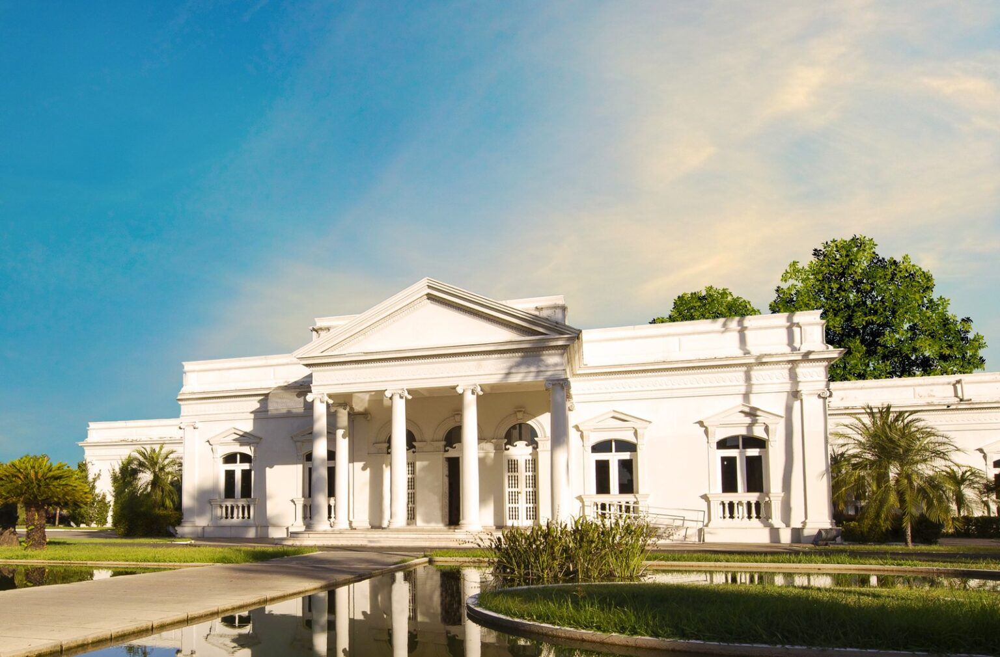
Rio Parnaíba
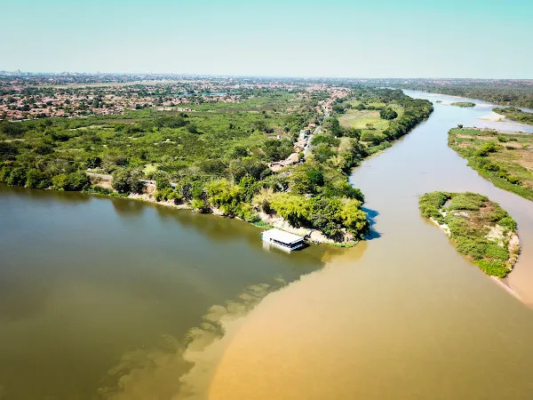
Catedral de N. S. do Amparo
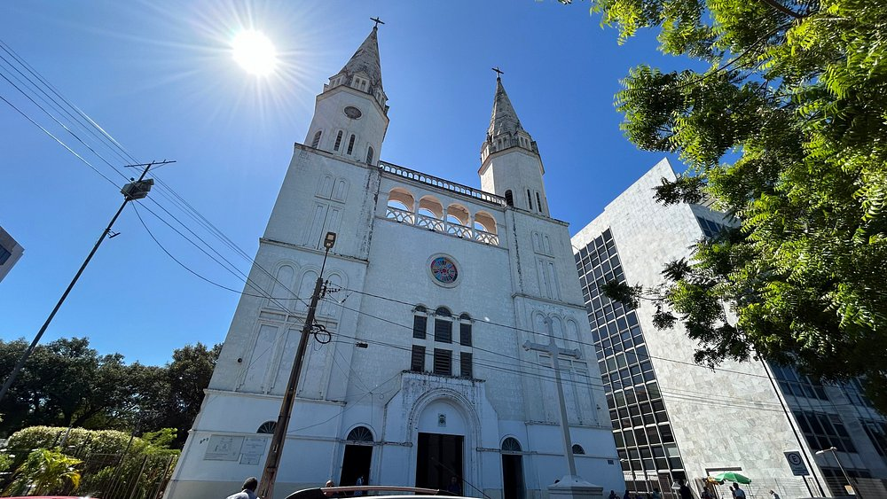
Nos seus 2.700 Km², o Delta do Parnaíba exibe cenários de ilhas, ilhotas, manguezais e dunas,
rodeados por água doce que serpenteia desde a Chapada das Mangabeiras.
Em Parnaíba, vale visitar o Porto das Barcas, o núcleo mais antigo da região.
Em Luís Correia, as praias de Atalaia e Coqueiro são pontos de lazer.
A Lagoa do Portinho, cercada de dunas e manguezais, é outro destino imperdível.
Delta do Parnaíba
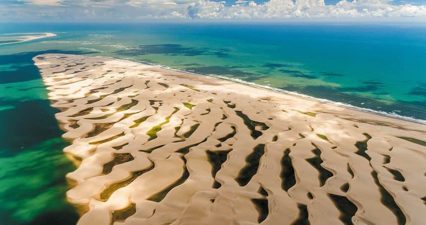
Ilha do Caju
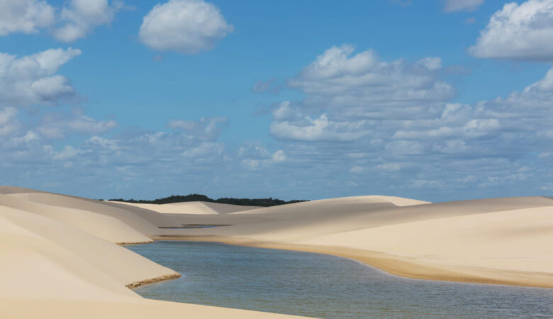
Porto das Barcas
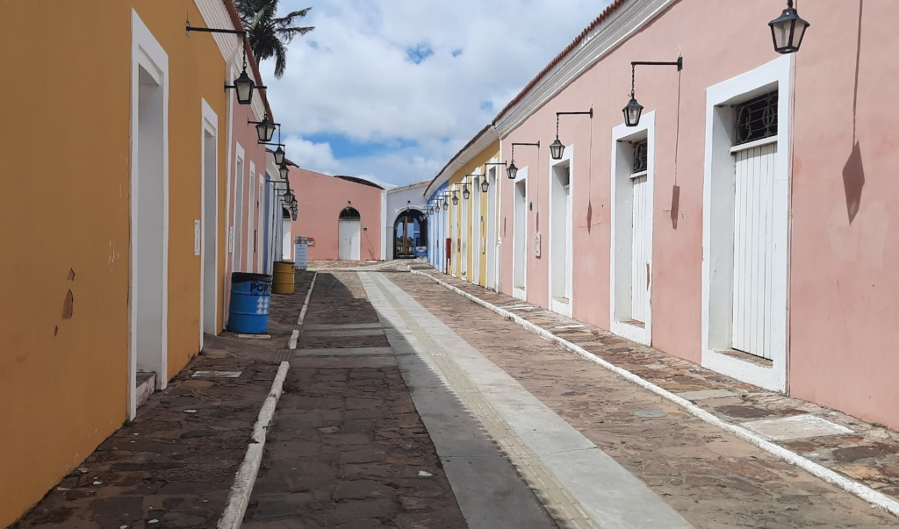
Lagoa do Portinho
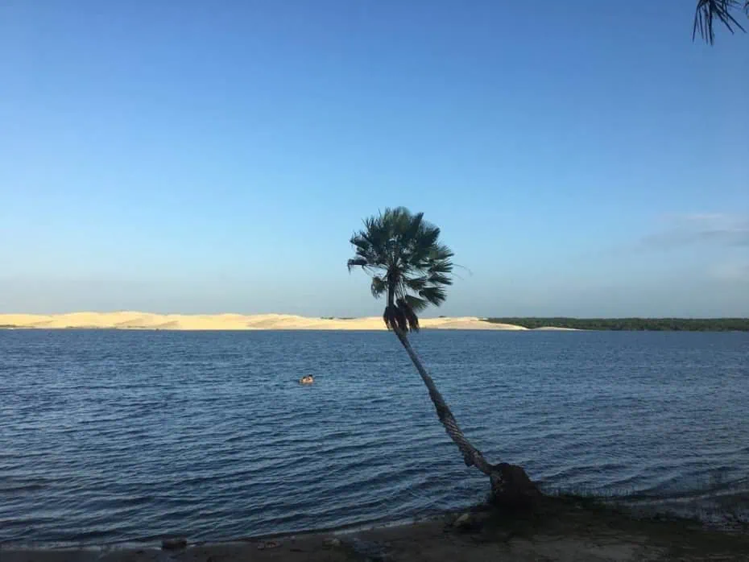
Localizado a 202 Km de Teresina, o parque possui 6.300 hectares
com formações rochosas que parecem sete cidades, com ruas, praças e monumentos naturais.
Mapa do Brasil (rotacionado)
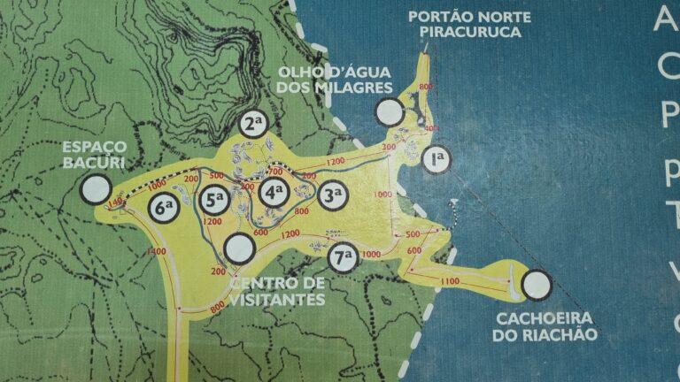
Salto do Batismo
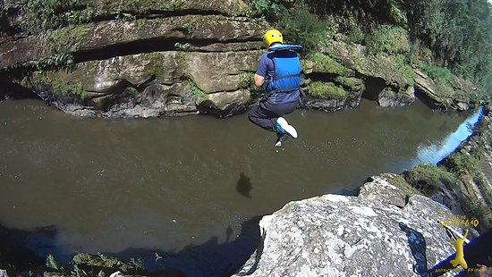
Formações Rochosas
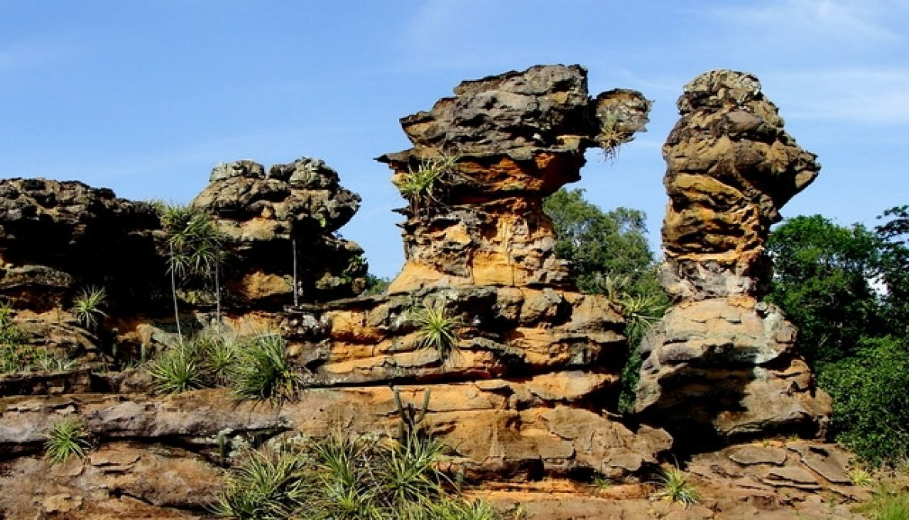
A 650 Km de Teresina, abriga uma das maiores concentrações de sítios pré-históricos das Américas,
alguns com até 40 mil anos.
É o único parque nacional de ecossistema típico de caatinga, tombado pela UNESCO
como Patrimônio Histórico da Humanidade, graças às inscrições rupestres, fósseis e vestígios arqueológicos.
Inscrições Rupestres
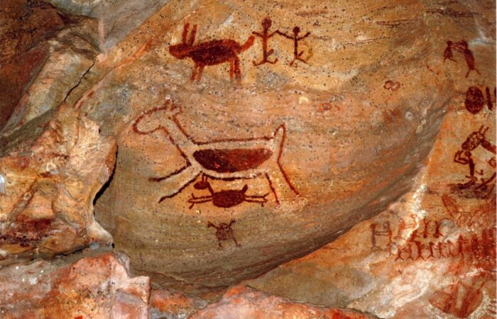
Serra da Capivara
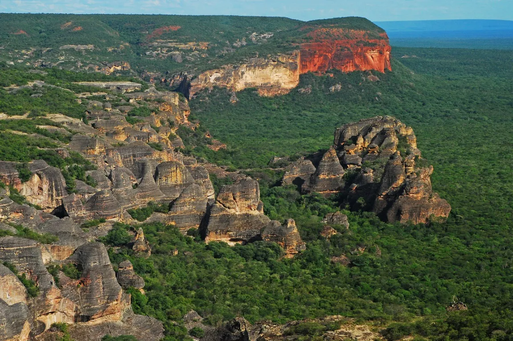
Fontes de Referência:
EMBRATUR
Revista 0Km – Delta do Parnaíba, o Paraíso das Águas.
Críticas e sugestões: catce.2025111mtds@aluno.ifpi.edu.br